Table of Contents
Introduction
In R there are many tools available for exploring data. However, in consulting I still see a lot of people using base R’s table and summary functions, followed by a lot of work to get the result into a more presentable format. My own frustrations led to me creating a package (tidyext) for personal use in this area. While that suits me fine, there are tools that can go much further with little effort. Recently, Staniak & Biecek Staniak and Biecek (2019) wrote an article in the R Journal exploring several of such packages, so I thought I’d try them out for myself, and take others along with me for that ride.
Note that these are first impressions, I haven’t really dived deeply into any of the packages, and may be missing some things. But that is also part of the point for this sort of thing. It isn’t a modeling package, and we have a good idea of what we want in EDA, so these should be easy to pick up and use.
Packages
I’ve updated the article’s table 1, basically as it would have a year’s worth of downloads.
| package | downloads | debut |
|---|---|---|
| summarytools | 197854 | 2014-08-11 |
| DataExplorer | 184836 | 2016-03-01 |
| visdat | 183303 | 2017-07-11 |
| funModeling | 101535 | 2016-02-07 |
| arsenal | 75596 | 2016-12-30 |
| dlookr | 44085 | 2018-04-27 |
| dataMaid | 42595 | 2017-01-02 |
| inspectdf | 22794 | 2019-04-24 |
| xray | 19260 | 2017-11-22 |
| RtutoR | 16203 | 2016-03-12 |
| ExPanDaR | 15319 | 2018-05-11 |
| exploreR | 14362 | 2016-02-10 |
| SmartEDA | 13542 | 2018-04-06 |
| explore | 9938 | 2019-05-16 |
A more informative assessment of usage would be in average monthly downloads.
| package | average_monthly_downloads |
|---|---|
| visdat | 5091.750 |
| DataExplorer | 3554.538 |
| summarytools | 2786.676 |
| funModeling | 1915.755 |
| arsenal | 1758.047 |
| dlookr | 1632.778 |
| inspectdf | 1519.600 |
| dataMaid | 1014.167 |
| explore | 709.857 |
| xray | 601.875 |
| ExPanDaR | 589.192 |
| SmartEDA | 501.556 |
| RtutoR | 311.596 |
| exploreR | 270.981 |
Here is a visualization of their growth over time.
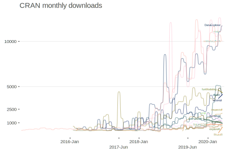
Selected packages
I’ll outline my reasons for selecting some packages to explore and not others. These reasons are somewhat, but not necessarily, arbitrary, and may leave out some viable newer packages. For the data scenario, I am assuming messy data of the sort that might have hundreds of columns of mixed data types, potentially with lots of missingness, attributes that are only applicable to subsets of the data (e.g. branching logic in surveys), etc.1
Here is my criteria for selection:
- Relatively more widely used
- I’ve used it before and want to revisit it
- I’ve heard of it before and want to try it
- I’m familiar with the package author’s work
- Appears to be in active development (especially on GitHub) according to modern programming standards
- Good documentation
Things I’m not as concerned about:
- Anything that requires actual analysis. I have no interest in bivariate statistical tests, PCA, imputation. It likely isn’t appropriate, and I could do better via other means.
- Visuals, though fundamental for data exploration, can usually be done better with even a modicum of effort, so this wouldn’t be a big factor for me, and some common ones are poor for communication (e.g. histograms). However, if it saves me some time for initial presentations or something like that, all the better.
In the end, I would like a package that is well will make common tasks easier for me and potentially save me time in creating reports/presentation.
Staniak & Biecek note two general phases of data exploration, each with specific tasks, based on the CRISP-DM standard Wirth and Hipp (2000).2
- Understanding
- Description
- Validity
- Exploration
- Preparation
- Cleaning
- Derived Attributes
In the first, I will focus on tools for understanding, particularly description and validity, as they refer to exploration tasks as visualization, which is a perk, but something I’m more inclined to do myself.
I’m definitely less interested in the preparation. ‘Cleaning’ in the article refers to mean/median imputation, something I’ve never bothered to do for reasons that have been noted in the statistical literature for a long time. The other transformations are easy and should be explicitly documented. Furthermore, in creating derived attributes, things like category merging and standardization depend on the subset of the data used, so it would be better to be more explicit than automatic. Also, if things like an automated PCA is viable for your situation, it probably is simple data (i.e. all variables of the same type), in which case, most of these tools probably won’t add much value to you.
So with that in mind here are the ones I will explore (in alphabetical order):
- arsenal
- DataExplorer
- dataMaid
- SmartEDA
- summarytools
- visdat
The Data
I’ve chosen the heart_disease data available from the UCI repository (object name hd). It contains a mixture of data types but isn’t too unweildy, as it’s already been cleaned and has few columns. I’ve additionally added some random missingness, and created an hd_sample which has only a couple columns to cut down on the display.
Data Description
For data description dimensions variables number variables variable type meta-data size in RAM
Preliminary
To give a sense of what my preference is, consider my own functions. The following actually calls a separate numerical summary function as well as a categorical variable function, and both return ‘tidy’ data frames that can immediately be used for presentation (e.g. kableExtra) and visualization (e.g. ggplot2), or drilling down to only selections of the output.
library(tidyext)
describe_all(hd, extra = T)
$`Numeric Variables`
# A tibble: 9 x 12
Variable N Mean SD Min Q1 Median Q3 Max `% Missing` Distinct Zeros
<chr> <dbl> <dbl> <dbl> <dbl> <dbl> <dbl> <dbl> <dbl> <dbl> <dbl> <dbl>
1 id 303 152 87.6 1 76.5 152 228. 303 0 303 0
2 age 288 54.2 9.15 29 47 55 61 77 5 41 0
3 resting_bp 289 132. 17.3 94 120 130 140 200 5 48 0
4 cholesterol 286 246. 52.1 126 211 240 275. 564 6 149 0
5 resting_ecg 289 0.54 0.53 0 0 1 1 2 5 3 137
6 max_heartrate 289 150. 23.0 71 134 153 168 202 5 90 0
7 old_peak 291 1.01 1.11 0 0 0.7 1.6 5.6 4 39 95
8 n_vessels 293 0.74 1.03 0 0 0 1 4 3 5 168
9 heart_disease 290 0.56 0.5 0 0 1 1 1 4 2 129
$`Categorical Variables`
# A tibble: 22 x 4
Variable Group Frequency `%`
<chr> <fct> <int> <dbl>
1 sex male 198 65
2 sex female 89 29.0
3 sex <NA> 16 5
4 chest_pain_type typical angina 135 45
5 chest_pain_type non-anginal pain 82 27
6 chest_pain_type atypical angina 49 16
7 chest_pain_type asymptomatic 20 7.
8 chest_pain_type <NA> 17 6
9 fasting_blood_sugar lt_120 238 79
10 fasting_blood_sugar gt_120 44 15
# … with 12 more rowsI also have options, such as the following.
hd %>%
select(age, sex, heart_disease) %>%
describe_all(
digits = 2,
include_NAcat = FALSE,
max_levels = 3,
include_numeric = TRUE, # allows numeric variables with few levels
sort_by_freq = TRUE,
extra = TRUE
)
$`Numeric Variables`
# A tibble: 2 x 12
Variable N Mean SD Min Q1 Median Q3 Max `% Missing` Distinct Zeros
<chr> <dbl> <dbl> <dbl> <dbl> <dbl> <dbl> <dbl> <dbl> <dbl> <dbl> <dbl>
1 age 288 54.2 9.15 29 47 55 61 77 5 41 0
2 heart_disease 290 0.56 0.5 0 0 1 1 1 4 2 129
$`Categorical Variables`
# A tibble: 4 x 4
Variable Group Frequency `%`
<chr> <fct> <int> <dbl>
1 sex male 198 69
2 sex female 89 31
3 heart_disease 1 161 56.
4 heart_disease 0 129 44 For grouped output, I can use the underlying functions. Here we look at summaries for numerical variables.
hd %>%
num_by(
main_var = vars(age, cholesterol),
group_var = sex,
extra = TRUE
)
# A tibble: 6 x 13
# Groups: sex [3]
sex Variable N Mean SD Min Q1 Median Q3 Max `% Missing` Distinct Zeros
<chr> <chr> <dbl> <dbl> <dbl> <dbl> <dbl> <dbl> <dbl> <dbl> <dbl> <dbl> <dbl>
1 male age 187 53.5 8.9 29 47 54 59 70 6 37 0
2 male cholesterol 187 239. 42.2 126 210. 234 266 353 6 112 0
3 female age 86 55.3 9.4 34 49 56.5 62 76 3 34 0
4 female cholesterol 83 263. 66.8 149 214. 258 298. 564 7 70 0
5 <NA> age 15 56.7 10.2 44 49.5 56 63 77 6 12 0
6 <NA> cholesterol 16 240. 53.5 141 200 240. 284 325 0 16 0The categorical variable functionality is very similar.
hd %>%
cat_by(
main_var = chest_pain_type,
group_var = sex
)
# A tibble: 14 x 5
# Groups: sex [3]
sex chest_pain_type N `% of Total` `% of sex`
<chr> <chr> <int> <dbl> <dbl>
1 female asymptomatic 2 0.660 2.25
2 female atypical angina 16 5.28 18.0
3 female non-anginal pain 29 9.57 32.6
4 female typical angina 34 11.2 38.2
5 female <NA> 8 2.64 8.99
6 male asymptomatic 18 5.94 9.09
7 male atypical angina 30 9.90 15.2
8 male non-anginal pain 49 16.2 24.7
9 male typical angina 93 30.7 47.0
10 male <NA> 8 2.64 4.04
11 <NA> atypical angina 3 0.990 18.8
12 <NA> non-anginal pain 4 1.32 25
13 <NA> typical angina 8 2.64 50
14 <NA> <NA> 1 0.330 6.25As these are tidy tibbles, they are essentially ready for presentation.
describe_all_num(hd) %>%
kableExtra::kable()| Variable | N | Mean | SD | Min | Q1 | Median | Q3 | Max | % Missing |
|---|---|---|---|---|---|---|---|---|---|
| id | 303 | 152.00 | 87.61 | 1 | 76.5 | 152.0 | 227.50 | 303.0 | 0 |
| age | 288 | 54.19 | 9.15 | 29 | 47.0 | 55.0 | 61.00 | 77.0 | 5 |
| resting_bp | 289 | 131.67 | 17.32 | 94 | 120.0 | 130.0 | 140.00 | 200.0 | 5 |
| cholesterol | 286 | 246.24 | 52.14 | 126 | 211.0 | 240.0 | 274.75 | 564.0 | 6 |
| resting_ecg | 289 | 0.54 | 0.53 | 0 | 0.0 | 1.0 | 1.00 | 2.0 | 5 |
| max_heartrate | 289 | 149.92 | 22.97 | 71 | 134.0 | 153.0 | 168.00 | 202.0 | 5 |
| old_peak | 291 | 1.01 | 1.11 | 0 | 0.0 | 0.7 | 1.60 | 5.6 | 4 |
| n_vessels | 293 | 0.74 | 1.03 | 0 | 0.0 | 0.0 | 1.00 | 4.0 | 3 |
| heart_disease | 290 | 0.56 | 0.50 | 0 | 0.0 | 1.0 | 1.00 | 1.0 | 4 |
These serve most of my needs for initial peeking at the data. They return a tibble/data.frame that makes for easy presentation and visualization. The underlying code uses tidyverse and mostly adheres to standard programming conventions. This is the same sort of thing I’m looking for.
arsenal
We begin alphabetically with the arsenal package. Here we use tableby for a generic summary as well as grouped summary. The result is markdown, so for presentation one must use results='asis'.
library(arsenal)
hd_sample %>%
tableby( ~ ., data = .) %>%
summary()| Overall (N=303) | |
|---|---|
| age | |
| N-Miss | 15 |
| Mean (SD) | 54.188 (9.148) |
| Range | 29.000 - 77.000 |
| cholesterol | |
| N-Miss | 17 |
| Mean (SD) | 246.245 (52.139) |
| Range | 126.000 - 564.000 |
| resting_bp | |
| N-Miss | 14 |
| Mean (SD) | 131.675 (17.320) |
| Range | 94.000 - 200.000 |
| sex | |
| N-Miss | 16 |
| female | 89 (31.0%) |
| male | 198 (69.0%) |
| chest_pain_type | |
| N-Miss | 17 |
| asymptomatic | 20 (7.0%) |
| atypical angina | 49 (17.1%) |
| non-anginal pain | 82 (28.7%) |
| typical angina | 135 (47.2%) |
hd_sample %>%
tableby(sex ~ ., data = .) %>%
summary()| female (N=89) | male (N=198) | Total (N=287) | p value | |
|---|---|---|---|---|
| age | 0.134 | |||
| N-Miss | 3 | 11 | 14 | |
| Mean (SD) | 55.267 (9.381) | 53.492 (8.920) | 54.051 (9.088) | |
| Range | 34.000 - 76.000 | 29.000 - 70.000 | 29.000 - 76.000 | |
| cholesterol | < 0.001 | |||
| N-Miss | 6 | 11 | 17 | |
| Mean (SD) | 263.361 (66.790) | 239.187 (42.233) | 246.619 (52.135) | |
| Range | 149.000 - 564.000 | 126.000 - 353.000 | 126.000 - 564.000 | |
| resting_bp | 0.548 | |||
| N-Miss | 5 | 8 | 13 | |
| Mean (SD) | 133.048 (18.733) | 131.689 (16.504) | 132.106 (17.195) | |
| Range | 94.000 - 200.000 | 94.000 - 192.000 | 94.000 - 200.000 | |
| chest_pain_type | 0.076 | |||
| N-Miss | 8 | 8 | 16 | |
| asymptomatic | 2 (2.5%) | 18 (9.5%) | 20 (7.4%) | |
| atypical angina | 16 (19.8%) | 30 (15.8%) | 46 (17.0%) | |
| non-anginal pain | 29 (35.8%) | 49 (25.8%) | 78 (28.8%) | |
| typical angina | 34 (42.0%) | 93 (48.9%) | 127 (46.9%) |
Here is an example of categorical-only output using freqlist.
with(hd, table(sex, chest_pain_type)) %>%
freqlist() %>%
summary()| sex | chest_pain_type | Freq | Cumulative Freq | Percent | Cumulative Percent |
|---|---|---|---|---|---|
| female | asymptomatic | 2 | 2 | 0.74 | 0.74 |
| atypical angina | 16 | 18 | 5.90 | 6.64 | |
| non-anginal pain | 29 | 47 | 10.70 | 17.34 | |
| typical angina | 34 | 81 | 12.55 | 29.89 | |
| male | asymptomatic | 18 | 99 | 6.64 | 36.53 |
| atypical angina | 30 | 129 | 11.07 | 47.60 | |
| non-anginal pain | 49 | 178 | 18.08 | 65.68 | |
| typical angina | 93 | 271 | 34.32 | 100.00 |
Pros
The tableby summary is essentially a ‘Table 1’, which is an unfortunately named display of descriptive stats for a sample of a given study3. My clients often want that, and I’ve actually used a package specifically geared towards that just to save me the headache (tableOne), so I definitely find that aspect useful. However, Table 1’s almost invariably have needless statistical output or analysis, and are not a model I would choose to go for. As you can see, the layout is not going to be viable for more than a few variables, though it is common practice to present them that way in journal articles regardless of verbosity/legibility.
Issues
I’m not thrilled with markdown output, as I have little control over it, but it’s fine. Also, the default layout is not so succinct, and it appears it’s trying to emulate SAS functions, which are not models for presentation in my opinion. One can use a function to write the output to html, but that’s not something I want or need, as I’d rather it just be amenable to the document I’m already creating, or create a report for me. Lastly, I’m not crazy about using the summary function to get the output. It seems unlikely that if my goal is to automate parts of EDA that I’d want to use the underlying list objects, so using summary as an argument with default of TRUE would make more sense to me design-wise.
DataExplorer
Now we move to DataExplorer. Let’s introduce the package with the introduce function. I already like this, as it provides good info that extends what you’d get with str or glimpse.
library(DataExplorer)
introduce(hd)
# A tibble: 1 x 9
rows columns discrete_columns continuous_colu… all_missing_col… total_missing_v… complete_rows total_observati…
<int> <int> <int> <int> <int> <int> <int> <int>
1 303 15 6 9 0 214 152 4545
# … with 1 more variable: memory_usage <dbl>It also can display this information visually in two different ways. I like this, but can’t say I’d ever have a reason to actually use it.
plot_str(list(hd = hd, gapminder = gapminder_2019))
plot_intro(hd)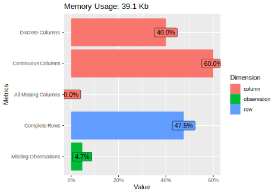
We can focus on the missingness.
plot_missing(hd_sample)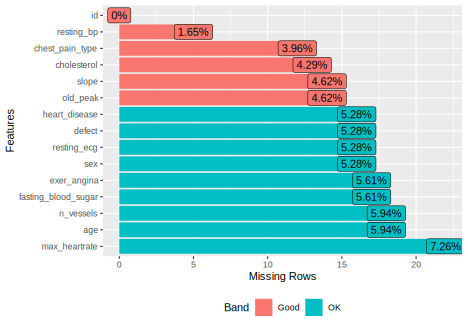
It can also plot distributions, e.g. bar and histograms,
plot_bar(hd)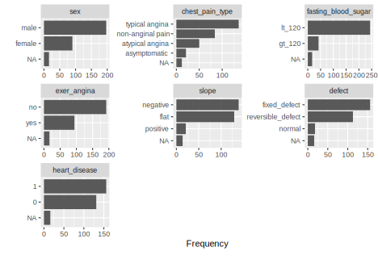
But this sort of thing only takes a couple lines of ggplot to do on your own, which you can then customize far more easily.
hd %>%
select_if(is.character) %>%
pivot_longer(everything(), names_to = 'variable', values_to = 'value') %>%
drop_na() %>%
ggplot(aes(x = value)) +
geom_bar() +
coord_flip() +
facet_wrap(~ variable, scales = 'free') 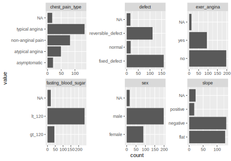
Similarly there are QQ plots, scatterplots and more. I always try to get people to try correlation plots in lieu of large correlation matrices, and DataExplorer provides this. The nice thing is that it will automatically create indicator variables for levels of categorical variables, but beyond that there are issues. For one, it’s diagonal is reversed from the typical presentation of correlation matrices. If you don’t drop the missing, the plot isn’t very useful, because it will include NA as a factor level, but to its credit DataExplorer has an option to only focus on continuous or discrete output. In addition, ‘centered’ is not the obvious choice for alignment of the x axis, so this would take additional work to make presentable.
plot_correlation(
hd,
ggtheme = theme_minimal(),
cor_args = list("use" = "pairwise.complete.obs")
)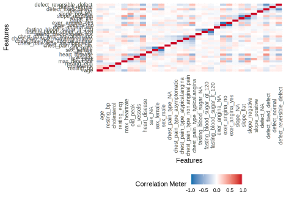
There are packages that do this specifically, such as heatmaply. I have my own function that does an internal factor analysis to sort the variables and produces an interactive result, so this aspect of DataExplorer doesn’t appeal to me.
hd %>%
select_if(is.numeric) %>%
select(-id) %>%
cor(use = 'pair') %>%
visibly::corr_heat()If the various options of output, or only some of them, appeals to you, they can all be nicely wrapped up in an automatic report. Various settings for each type of output can be set with an additional function (configure_report) or just passing a list of arguments, including which functions to use, ggplot2 theme, etc. You can see the report here.
create_report(
hd,
y = 'heart_disease',
output_dir = 'other_docs',
output_file = 'data_explorer_report.html',
report_title = 'My Data Description'
)Pros
I think many would like at least some functionality in DataExplorer, as well as many of the visualizations. The ease with which to generate a report should also be sufficient for anyone’s personal use, and with some tweaking, presentation to others. It also uses data.table under the hood, so likely can handle large data with efficiency.
Not covered here, but DataExplorer also has functionality for feature processing and engineering, for example, collapsing sparse categories, dummy coding, etc.
Issues
The issues I have are pretty minor with this one aside from unnecessary statistical analysis and visualization choices.
SmartEDA
I wanted to look at the SmartEDA package because the figure in the article was of a clean report. Let’s start our exploration with the basic ExpData function
library(SmartEDA)
ExpData(hd)
Descriptions Obs
1 Sample size (Nrow) 303
2 No. of Variables (Ncol) 15
3 No. of Numeric Variables 9
4 No. of Factor Variables 0
5 No. of Text Variables 6
6 No. of Logical Variables 0
7 No. of Unique Variables 1
8 No. of Date Variables 0
9 No. of Zero variance Variables (Uniform) 0
10 %. of Variables having complete cases 6.67% (1)
11 %. of Variables having <50% missing cases 93.33% (14)
12 %. of Variables having >50% missing cases 0% (0)
13 %. of Variables having >90% missing cases 0% (0)We can look at ExpNumStat to get some basic stats for numeric variables.
ExpNumStat(hd, round = 1)
Vname Group TN nNeg nZero nPos NegInf PosInf NA_Value Per_of_Missing sum min max mean median SD CV
2 age All 303 0 0 288 0 0 15 5.0 15606.0 29 77.0 54.2 55.0 9.1 0.2
4 cholesterol All 303 0 0 286 0 0 17 5.6 70426.0 126 564.0 246.2 240.0 52.1 0.2
1 id All 303 0 0 303 0 0 0 0.0 46056.0 1 303.0 152.0 152.0 87.6 0.6
5 max_heartrate All 303 0 0 289 0 0 14 4.6 43326.0 71 202.0 149.9 153.0 23.0 0.2
6 old_peak All 303 0 95 196 0 0 12 4.0 293.3 0 5.6 1.0 0.7 1.1 1.1
3 resting_bp All 303 0 0 289 0 0 14 4.6 38054.0 94 200.0 131.7 130.0 17.3 0.1
IQR Skewness Kurtosis
2 14.0 -0.2 -0.6
4 63.8 1.2 4.5
1 151.0 0.0 -1.2
5 34.0 -0.5 -0.1
6 1.6 1.2 0.9
3 20.0 0.7 0.9We can look at ExpNumStat to get some basic stats for grouped output also, and set various options.
ExpNumStat(
hd_sample,
by = "GA",
gp = "sex",
Qnt = c(.1, .9),
Outlier = TRUE,
round = 1
)
Vname Group TN nNeg nZero nPos NegInf PosInf NA_Value Per_of_Missing sum min max mean median SD
1 age sex:All 303 0 0 288 0 0 15 5.0 15606 29 77 54.2 55.0 9.1
4 age sex:male 198 0 0 187 0 0 11 5.6 10003 29 70 53.5 54.0 8.9
7 age sex:female 89 0 0 86 0 0 3 3.4 4753 34 76 55.3 56.5 9.4
10 age sex:NA 0 0 0 0 0 0 0 NaN 0 Inf -Inf NaN NA NA
2 cholesterol sex:All 303 0 0 286 0 0 17 5.6 70426 126 564 246.2 240.0 52.1
5 cholesterol sex:male 198 0 0 187 0 0 11 5.6 44728 126 353 239.2 234.0 42.2
8 cholesterol sex:female 89 0 0 83 0 0 6 6.7 21859 149 564 263.4 258.0 66.8
11 cholesterol sex:NA 0 0 0 0 0 0 0 NaN 0 Inf -Inf NaN NA NA
3 resting_bp sex:All 303 0 0 289 0 0 14 4.6 38054 94 200 131.7 130.0 17.3
6 resting_bp sex:male 198 0 0 190 0 0 8 4.0 25021 94 192 131.7 130.0 16.5
9 resting_bp sex:female 89 0 0 84 0 0 5 5.6 11176 94 200 133.0 133.0 18.7
12 resting_bp sex:NA 0 0 0 0 0 0 0 NaN 0 Inf -Inf NaN NA NA
CV IQR Skewness Kurtosis 10% 90% LB.25% UB.75% nOutliers
1 0.2 14.0 -0.2 -0.6 41.7 66.0 26.0 82.0 0
4 0.2 12.0 -0.2 -0.6 41.0 65.0 29.0 77.0 0
7 0.2 13.0 -0.3 -0.6 41.5 66.5 29.5 81.5 0
10 NA NA NaN NaN NA NA NA NA 0
2 0.2 63.8 1.2 4.5 187.5 309.0 115.4 370.4 5
5 0.2 56.5 0.2 -0.2 185.6 298.4 124.8 350.8 1
8 0.3 85.0 1.4 3.8 197.0 338.8 86.0 426.0 1
11 NA NA NaN NaN NA NA NA NA 0
3 0.1 20.0 0.7 0.9 110.0 152.0 90.0 170.0 7
6 0.1 20.0 0.6 0.6 110.0 152.0 90.0 170.0 3
9 0.1 20.0 0.6 1.2 108.6 154.1 90.0 170.0 3
12 NA NA NaN NaN NA NA NA NA 0There is also some visualization of relationships with a given target variable.
ExpNumViz(hd_sample, target = 'cholesterol')
[[1]]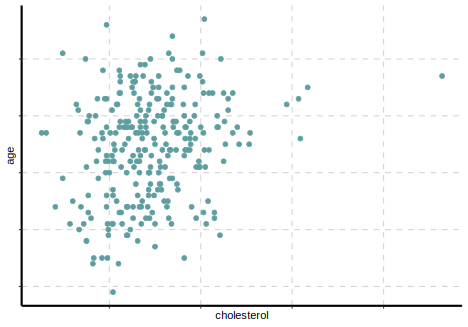
[[2]]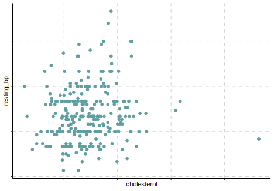
Here are the default categorical data summaries. This is a nice and clean data.frame presentation.
ExpCTable(hd_sample)
Variable Valid Frequency Percent CumPercent
1 sex female 89 29.37 29.37
2 sex male 198 65.35 94.72
3 sex NA 16 5.28 100.00
4 sex TOTAL 303 NA NA
5 chest_pain_type asymptomatic 20 6.60 6.60
6 chest_pain_type atypical angina 49 16.17 22.77
7 chest_pain_type NA 17 5.61 28.38
8 chest_pain_type non-anginal pain 82 27.06 55.44
9 chest_pain_type typical angina 135 44.55 99.99
10 chest_pain_type TOTAL 303 NA NAAs there was with numeric variables, there is also visualization for the categorical variables.
ExpCatViz(hd_sample)
[[1]]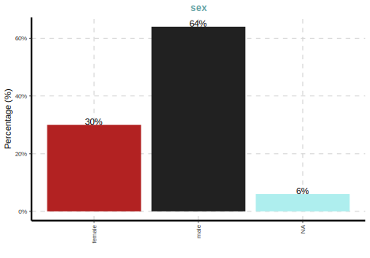
[[2]]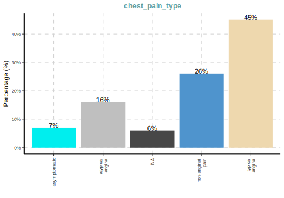
As far as reporting, smarteda provides this
ExpReport(
hd %>% select(-id),
theme = visibly::theme_clean(),
op_dir = 'other_docs/',
op_file = 'smarteda.html'
)Pros
SmartEDA is fairly intuitive to use. It returns a data frame, and some of the less verbose output is quite ready to go.
Issues
A lot of this isn’t very useful to me, such as parallel coordinate plots, ‘outlier’ analysis, etc. I’m not crazy about the naming conventions, both for the functions and arguments (every single function begins with Exp, so why use it?). The default color schemes for some output is simply not viable.
summarytools
The summarytools package provides four main functions to work with, but I’m going to skip those and go straight to the tool that uses the key summary functions and puts it into a very nice presentation.
library(summarytools)
dfSummary(
hd %>% select(-id),
varnumbers = FALSE,
round.digits = 2,
plain.ascii = FALSE,
style = "grid",
graph.magnif = .33,
valid.col = FALSE,
tmp.img.dir = "img"
)Data Frame Summary
hd
Dimensions: 303 x 14
Duplicates: 0
| Variable | Stats / Values | Freqs (% of Valid) | Graph | Missing |
|---|---|---|---|---|
| age [numeric] |
Mean (sd) : 54.2 (9.1) min < med < max: 29 < 55 < 77 IQR (CV) : 14 (0.2) |
41 distinct values | 15 (4.95%) |
|
| sex [character] |
1. female 2. male |
89 (31.0%) 198 (69.0%) |
16 (5.28%) |
|
| chest_pain_type [character] |
1. asymptomatic 2. atypical angina 3. non-anginal pain 4. typical angina |
20 ( 7.0%) 49 (17.1%) 82 (28.7%) 135 (47.2%) |
17 (5.61%) |
|
| resting_bp [numeric] |
Mean (sd) : 131.7 (17.3) min < med < max: 94 < 130 < 200 IQR (CV) : 20 (0.1) |
48 distinct values | 14 (4.62%) |
|
| cholesterol [numeric] |
Mean (sd) : 246.2 (52.1) min < med < max: 126 < 240 < 564 IQR (CV) : 63.8 (0.2) |
149 distinct values | 17 (5.61%) |
|
| fasting_blood_sugar [character] |
1. gt_120 2. lt_120 |
44 (15.6%) 238 (84.4%) |
21 (6.93%) |
|
| resting_ecg [numeric] |
Mean (sd) : 0.5 (0.5) min < med < max: 0 < 1 < 2 IQR (CV) : 1 (1) |
0 : 137 (47.4%) 1 : 148 (51.2%) 2 : 4 ( 1.4%) |
14 (4.62%) |
|
| max_heartrate [numeric] |
Mean (sd) : 149.9 (23) min < med < max: 71 < 153 < 202 IQR (CV) : 34 (0.2) |
90 distinct values | 14 (4.62%) |
|
| exer_angina [character] |
1. no 2. yes |
197 (67.7%) 94 (32.3%) |
 |
12 (3.96%) |
| old_peak [numeric] |
Mean (sd) : 1 (1.1) min < med < max: 0 < 0.7 < 5.6 IQR (CV) : 1.6 (1.1) |
39 distinct values | 12 (3.96%) |
|
| slope [character] |
1. flat 2. negative 3. positive |
129 (46.1%) 133 (47.5%) 18 ( 6.4%) |
23 (7.59%) |
|
| n_vessels [numeric] |
Mean (sd) : 0.7 (1) min < med < max: 0 < 0 < 4 IQR (CV) : 1 (1.4) |
0 : 168 (57.3%) 1 : 64 (21.8%) 2 : 36 (12.3%) 3 : 20 ( 6.8%) 4 : 5 ( 1.7%) |
10 (3.3%) |
|
| defect [character] |
1. fixed_defect 2. normal 3. reversible_defect |
159 (55.4%) 17 ( 5.9%) 111 (38.7%) |
16 (5.28%) |
|
| heart_disease [numeric] |
Min : 0 Mean : 0.6 Max : 1 |
0 : 129 (44.5%) 1 : 161 (55.5%) |
13 (4.29%) |
This is exactly what I want- basic, not overwhelming and redundant information, a usable data.frame, simple visualization that is all you need, basic categorical information. In one function, I have pretty much all I’d need, but with control to tweak as necessary.
library(summarytools)
hd_sample %>%
group_by(sex) %>%
dfSummary(
varnumbers = FALSE,
round.digits = 2,
plain.ascii = FALSE,
na.col = FALSE,
style = "grid",
graph.magnif = .33,
valid.col = FALSE,
tmp.img.dir = "img"
)Data Frame Summary
hd_sample
Group: sex = female
Dimensions: 89 x 5
Duplicates: 0
| Variable | Stats / Values | Freqs (% of Valid) | Graph |
|---|---|---|---|
| age [numeric] |
Mean (sd) : 55.3 (9.4) min < med < max: 34 < 56.5 < 76 IQR (CV) : 13 (0.2) |
34 distinct values | |
| cholesterol [numeric] |
Mean (sd) : 263.4 (66.8) min < med < max: 149 < 258 < 564 IQR (CV) : 85 (0.3) |
70 distinct values | |
| resting_bp [numeric] |
Mean (sd) : 133 (18.7) min < med < max: 94 < 133 < 200 IQR (CV) : 20 (0.1) |
33 distinct values | |
| sex [character] |
1. female | 89 (100.0%) |  |
| chest_pain_type [character] |
1. asymptomatic 2. atypical angina 3. non-anginal pain 4. typical angina |
2 ( 2.5%) 16 (19.8%) 29 (35.8%) 34 (42.0%) |
 |
Group: sex = male
Dimensions: 198 x 5
Duplicates: 1
| Variable | Stats / Values | Freqs (% of Valid) | Graph |
|---|---|---|---|
| age [numeric] |
Mean (sd) : 53.5 (8.9) min < med < max: 29 < 54 < 70 IQR (CV) : 12 (0.2) |
37 distinct values | |
| cholesterol [numeric] |
Mean (sd) : 239.2 (42.2) min < med < max: 126 < 234 < 353 IQR (CV) : 56.5 (0.2) |
112 distinct values | |
| resting_bp [numeric] |
Mean (sd) : 131.7 (16.5) min < med < max: 94 < 130 < 192 IQR (CV) : 20 (0.1) |
42 distinct values | |
| sex [character] |
1. male | 198 (100.0%) | |
| chest_pain_type [character] |
1. asymptomatic 2. atypical angina 3. non-anginal pain 4. typical angina |
18 ( 9.5%) 30 (15.8%) 49 (25.8%) 93 (48.9%) |
Group: sex = NA
Dimensions: 16 x 5
Duplicates: 0
| Variable | Stats / Values | Freqs (% of Valid) | Graph |
|---|---|---|---|
| age [numeric] |
Mean (sd) : 56.7 (10.2) min < med < max: 44 < 56 < 77 IQR (CV) : 13.5 (0.2) |
12 distinct values | |
| cholesterol [numeric] |
Mean (sd) : 239.9 (53.5) min < med < max: 141 < 239.5 < 325 IQR (CV) : 84 (0.2) |
16 distinct values | |
| resting_bp [numeric] |
Mean (sd) : 123.8 (18.3) min < med < max: 101 < 120 < 180 IQR (CV) : 11.5 (0.1) |
101 : 1 ( 6.7%) 108 : 1 ( 6.7%) 110 : 2 (13.3%) 120 : 5 (33.3%) 125 : 2 (13.3%) 128 : 1 ( 6.7%) 130 : 1 ( 6.7%) 140 : 1 ( 6.7%) 180 : 1 ( 6.7%) |
|
| sex [character] |
All NA’s | ||
| chest_pain_type [character] |
1. atypical angina 2. non-anginal pain 3. typical angina |
3 (20.0%) 4 (26.7%) 8 (53.3%) |
Pros
Issues
The only nitpicky stuff I have with this package is that ctable isn’t useful to me, the numeric description is verbose
visdat
The package visdat is purely for visualization, and this includes missingness, correlation
library(visdat)
vis_dat(hd_sample)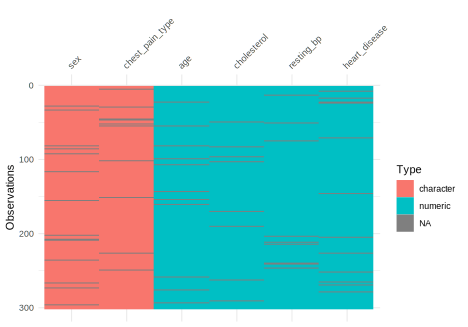
We can look at variable types along with the missingness. I like the integer/double mix, which might point to an issue if all the data should be integer valued.
vis_guess(hd)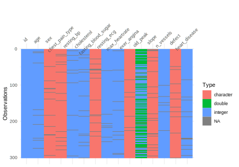
Visualization of the correlations, default is pairwise. This is probably the cleanest we’ve seen so far of this type of plot, but there is no way to order it meaningfully.
vis_cor(hd %>% select_if(is.numeric))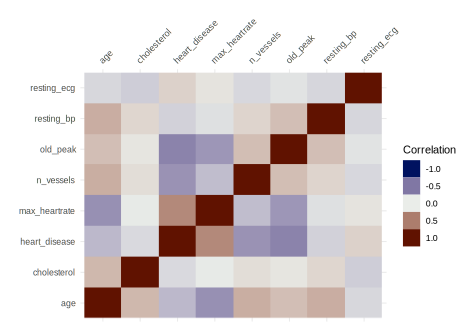
hd %>%
select(sex) %>%
vis_expect(expectation = ~ .x == 'male')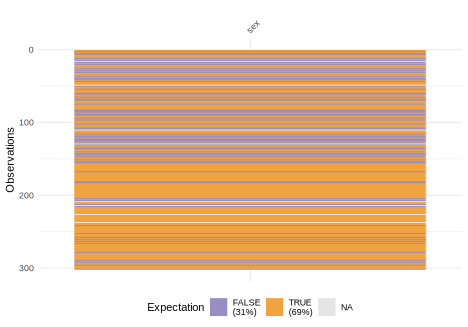
We can also compare whole data sets.
vis_compare(
hd_sample,
noiris::heart_disease %>% select(colnames(hd_sample)) %>% mutate_if(is.factor, as.character)
)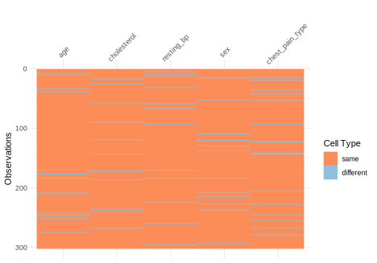
Pros
This package adds some useful functionality we haven’t seen. In addition, the underlying code adheres to open science standards.
Issues
This isn’t for numeric description, so can only supplement typical EDA. You may have to do some pre-processing for some functions unlike with other tools (e.g. subsetting to numeric).
Data Validity
dataMaid
janitor
dlookr: pdf report only? bad base R vis smarteda: vignette code and typos do not inspire confidence
Summary
tibble(
Package = c('arsenal', 'DataExplorer', 'SmartEDA', 'summarytools', 'visdat'),
`Ready to use output` = c('', emo::ji('check'), emo::ji('check'), emo::ji('check'), emo::ji('check')),
`Coding Standards` = rep('', 5),
`Visualization` = rep('', 5),
`Report Generation` = rep('', 5),
) %>%
kable_df(align = 'lccc')Links
https://mayoverse.github.io/arsenal/ http://visdat.njtierney.com/
Exercises
Staniak, Mateusz, and Przemyslaw Biecek. 2019. “The Landscape of R Packages for Automated Exploratory Data Analysis.” The R Journal. https://journal.r-project.org/archive/2019/RJ-2019-033/index.html.
Wirth, Rüdiger, and Jochen Hipp. 2000. “CRISP-Dm: Towards a Standard Process Model for Data Mining.” In Proceedings of the 4th International Conference on the Practical Applications of Knowledge Discovery and Data Mining, 29–39. Springer-Verlag London, UK.
However, for our demonstration I’ll be using something a little more wieldy.↩︎
To be honest, I wasn’t familiar with the CRoss Industry Standard Process for Data Mining until reading the article citing it. I don’t get the impression any particular methodology is actually consciously thought about by the vast majority of practicing data scientists, but it’s useful in providing a framework for the content here.↩︎
I see ‘Table 1’ used mostly by folks in medical fields, who subsequently place it as table 2, 3 or whatever as would normally be the case.↩︎